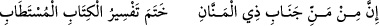
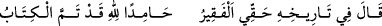
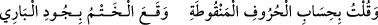

isminle senden diliyoruz… Kur’ân’ı kalplerimizin baharı, slarımızın şifâsı, hüzün ve
dertlerimizin ilacı, nimet verdiğin peygamberler, sıddıklar, şehitler ve sâlihlerle
beraber sana, Naîm cennetlerine, Dâru’s-Selâm’a sevkeden kumandanımız eyle.
Rahmetinle nasîb eyle, ey merhametlilerin en merhametlisi!
Fakîr (Bursevî) ellerini Kadîr Mevlâ’ya açıp şöyle der: Allah’ım ukûbetinden
muâfâtına, gazabından rızâna ve senden sana sığınırım. Ben seni hakkıyla övemem. Sen
kendini nasıl övmüşsen öylesin. Bana verdiğin vaadi yerine getirdin. Sen vaadinden
asla dönmezsin. Benim rüyamı gerçekleştirdin. Keder hapishanesinden beni çıkararak
bana ihsânda bulundun ve o sırada bana şöyle hitab ettin: “İste vereyim!” Ben de
isteğimin gâyesini rızan kıldım. Bu hizmetimi kabul ettiğini bana müjdeledin de dedin
ki: “Rabbi onu en güzel kabulle kabul etti.”[289] Ben sana nimetin tamama ermesi ve
lütfun kemâl bulması için duâ ediyordum. Rabbim, sana (ettiğim) duâ sâyesinde hiç
bedbaht olmadım.[290] Kalan şu kısa ömrümde de bundan önce verdiğin nimetlerin ve
lütufların kat be-katını nasîb eyle ve âkıbetimi hayır, hidâyet ve nûr kıl, her türlü iyilik,
saâdet ve sürûru nasîb eyle! Bütün hayırların anahtarı, karanlık vakitlerde kurbet
menzillerine gidenlerin kandili Nebiyy-i Nebîhi’ne ve önderlerimiz olan onun âl ve
ashâbına ve onlara tâbi olan büyüklere salât eyle!
İşte bu şekilde Rûhu’l-beyân fî tefsîri’l-Kur’ân isimli kitabın yazımı takriben vahyin
iniş süresi kadar bir zamanda tamamlanmış oldu.
Çünkü kader sopası beni yeryüzünün dört bir tarafına dağıttı. Uzun seferlerin elleri
beni enine boyuna çekiştirdi. Neticede Allah Teâlâ beni tamamlama makâmına getirdi.
Bu şekilde Allah’ın izniyle hem önünden hem de arkasından görebilen Peygamber
Efendimiz (s.a.)’in hicretinin 1117. senesinin Cemaziyelevvel ayının 14’ü Perşembe
günü/11 Eylül 1705 milâdi tarihinde tamama erdi. Tarihiyle alâkalı nazmen şöyle
dedim:
Lütuf sâhibi Allah Teâlâ’nın lütfuyla
Kitâb-ı müstedâb’ın hoş kitabın tefsiri sona erdi.
Onun târihi hakkında Fakîr Hakkî
Allah’a hamdederek dedi ki: Kitap tamam oldu,
Ben de noktalı harflerin hesabıyla dedim ki
Allah Teâlâ’nın lütfuyla sona erdi.